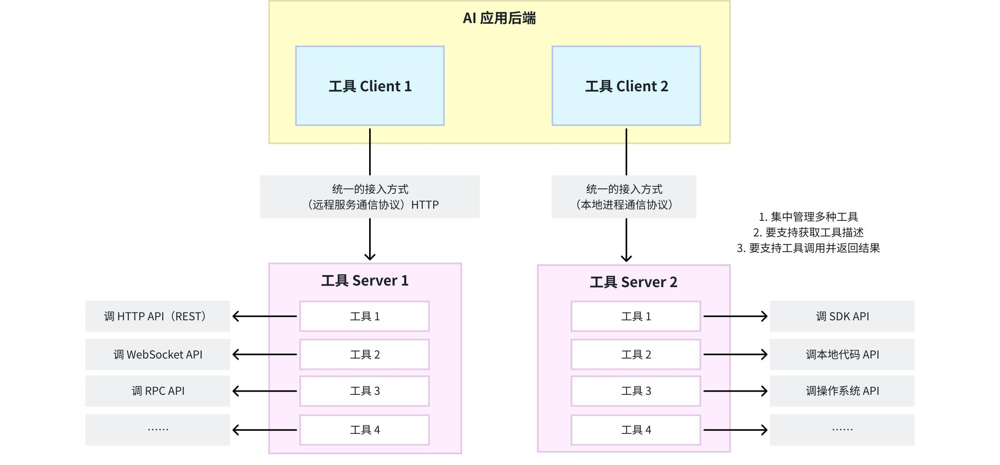

从工程问题推导 MCP
正在读取本章记录下次复习：—
请通过“启动学习站.cmd”进入，才能写入数据库。
5.1 目标状态
理想情况下，AI 应用只需添加一项配置或授权，就能：
- 连接某个上下文服务；
- 自动知道它提供哪些能力；
- 得到工具的名称、描述和 schema；
- 调用工具并解析结果；
- 感知工具列表变化；
- 读取资源和模板；
- 在双方能力不同的情况下安全降级。
5.2 必须标准化的部分
要达到这个目标，需要标准化：
| 需要统一的部分 | MCP 的答案 |
|---|---|
| 角色关系 | Host、Client、Server |
| 消息格式 | JSON-RPC 2.0 |
| 连接初始化 | 生命周期与版本/能力协商 |
| 能力发现 | tools/list、resources/list、prompts/list |
| 工具执行 | tools/call |
| 数据读取 | resources/read |
| 提示词获取 | prompts/get |
| 动态变化 | JSON-RPC Notifications |
| 本地连接 | stdio |
| 远程连接 | Streamable HTTP |
| 远程授权 | 基于 OAuth 2.1 体系的授权规范 |
5.3 解耦后的架构

工具实现可以是 Python、Java、Node.js、Go 或其他语言；Host 无需复制源代码，只需通过协议与 MCP Server 交互。